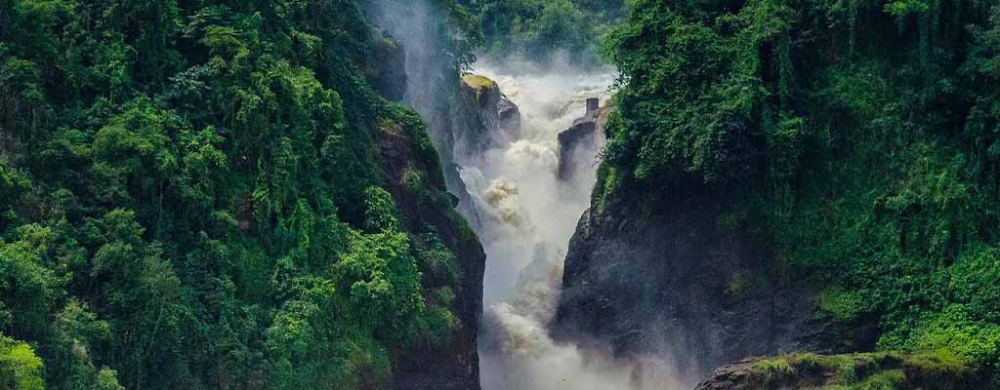
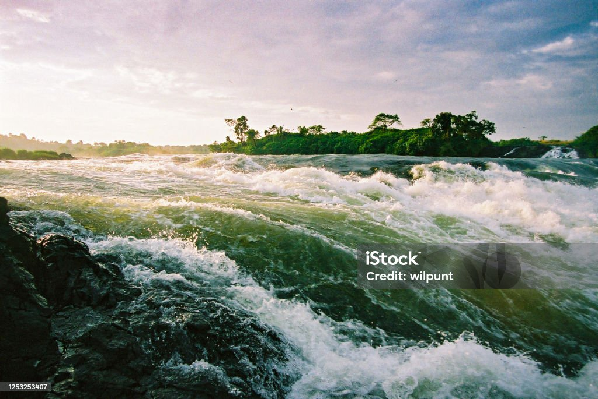
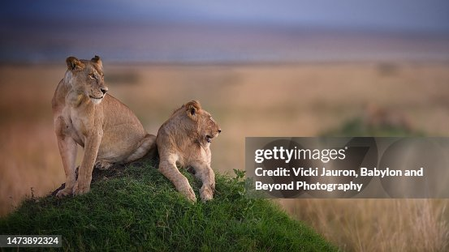

PEARL OF AFRICA
What county in East Africa have you ever been to?
I live in the western part of Uganda. I was born in Uganda, and it's where I have spent most of my years. A proud Nubian.
What to Expect in Uganda
Uganda is a country with a myriad of impressive features. We have the best climate anyone could wish for. This is what is found in Uganda:
-
 Physical features
Physical features
-  Source of the Nile
-  Wildlife and nature